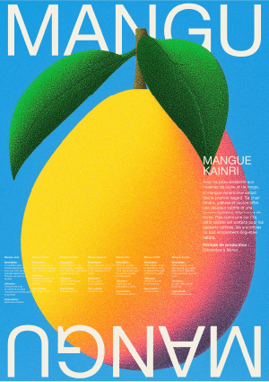

MANGU
Dans cette série d’affiches, chaque fruit tropical emblématique de La Réunion devient le porte-voix d’une richesse souvent méconnue : la diversité de ses variétés. Par un travail graphique vibrant, chaque pièce valorise un spécimen en particulier, tout en rappelant la pluralité des goûts, des textures et des histoires qui cohabitent sur notre île.